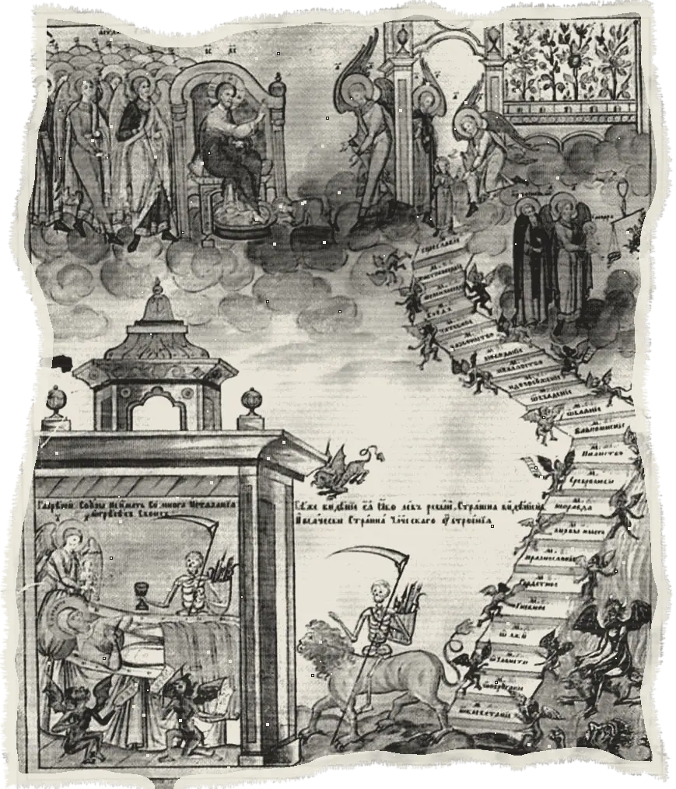
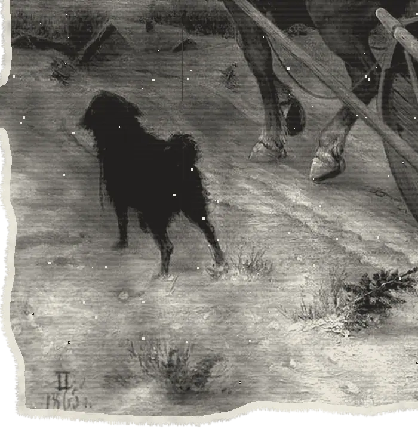

ТОМ I · ЛИСТ C · 03 / 12
ОБРЯД
Третий, девятый, сороковой дни
Самый уверенно повторяемый «русский похоронный обычай» оказывается и самым часто неверно описываемым: поминовение на третий, девятый и сороковой день — прежде литургическая схема, а уже потом народная.
Литургические источники XVII–XIX вв.; практика зафиксирована в XIX–XXI вв. · Россия; православные приходы · Православное христианство; народная переработка

C / 01
Устройство сорока дней
Поминовение усопшего на третий, девятый и сороковой день после смерти изложено в православных богослужебных руководствах, и основания там приводятся богословские, а не календарные. В руководстве XIX века «Новая скрижаль» третий день связан с Воскресением, девятый — с девятью чинами ангелов, сороковой — с Вознесением, которое случилось на сороковой день.
То же руководство прямо говорит, что молитвы — о прощении грехов и о водворении души «со святыми». Народные объяснения, сопровождающие схему, — что душа три дня посещает дом, что на девятый день её испытывают, что на сороковой она наконец уходит, — принадлежат другому регистру. Они широко распространены, они записаны, и они — не вероучение.

| Момент | Документировано в литургических источниках | Народная переработка (интерпретация) | Достоверность |
|---|---|---|---|
| Третий день | Поминовение; связано с Воскресением | Душа задерживается возле дома | высокая / низкая |
| Девятый день | Поминовение; связано с ангельскими чинами | Душе показывают места блаженных | высокая / низкая |
| Сороковой день | Поминовение; связано с Вознесением | Душа уходит; «окончательное» прощание | высокая / низкая |
| Годовщина | Ежегодное поминовение (годовины) | Умерший причисляется к предкам | высокая / низкая |
| Радоница | Установленный день приходского поминовения весной | Трапеза на могиле; приветствие умерших | средняя / низкая |

C / 02
Против истории о пережитках
Наука XIX — начала XX века часто читала русскую похоронную практику как пережиток дохристианской религии, поверх которой наложена Церковь. Позднейшие работы по ритуалу осторожнее. Исследование А. К. Байбурина о ритуале в традиционной культуре рассматривает ритуал как систему знаков с собственной внутренней логикой, а не как окаменелость прежнего верования; вопрос о том, что обряд «первоначально значил», из сохранившихся свидетельств обычно неразрешим.
Поэтому атлас помечает утверждения о происхождении как интерпретации. Сорокадневный цикл документирован как христианский. Понимали ли некоторые семьи его ещё и как более древний календарь — вопрос, который использованные здесь источники решить не могут.
C / 03
Кто делает работу
У обряда есть экономика ролей. Священник служит; чтец может читать псалтирь; женщины причитают; соседи готовят и несут. Причитания (см. лист G) исполняют женщины, которые часто, но не всегда родня, и их исполнение оценивают — по голосу, по полноте, по умению заставить комнату плакать.
Распределение труда само по себе исторично. В советское время роль священника сузилась, а роль семьи расширилась; после 1991 года где-то она сузилась обратно, а где-то нет.

Аппарат источники · связанные листы · термины
Источники этого листа
- skrizhal Вениамин (Краснопевков-Румовский), архиепископ — Новая скрижаль (1803 (текст сверен по современному интернет-изданию))
- baiburin1993 Байбурин, Альберт Кашфуллович — Ритуал в традиционной культуре (1993)
- shevzov2003 Shevzov, Vera — Russian Orthodoxy on the Eve of Revolution (2003)
- barsov1872 Барсов, Елпидифор Васильевич — Причитания Северного края (1872–1886)
Ссылки, даты обращения и ограничения — в списке источников.